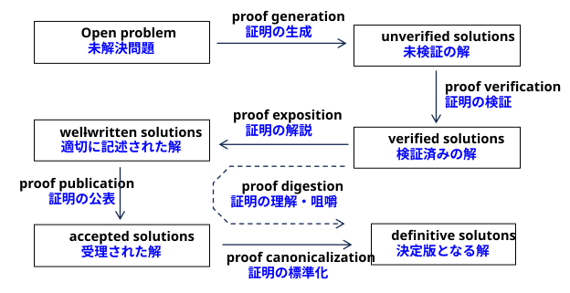

In short, we will transition from an era of proof scarcity to an era of proof abundance.
要するに、私たちは「証明が希少な時代」から「証明が過剰な時代」へと移行しようとしているのです。
• AI-generated proofs will accumulate faster than they can be verified;
AIが生成する証明は、検証が追いつかないほどの速さで蓄積されていくでしょう
• verified AI-generated proofs will accumulate faster than they can be given a readable write-up
検証済みのAI生成による証明は、人間が読める形に書き起こされるペースを上回る速さで蓄積されていくでしょう。
• AI-generated proofs, even those required to be both correct and well written, will overwhelm a traditional peer review system that depends on volunteer expert labor
AIが生成する証明は、たとえ正確かつ適切に記述されていることが求められるものであっても、専門家によるボランティアの労力に依存する従来の査読システムを圧倒することになるでしょう。
• and even the published proofs will be too numerous for the community to work into definitive form
公表される証明の数さえもあまりに多く、コミュニティがそれらを決定的な形にまとめ上げるのは困難なほどになるだろう。
